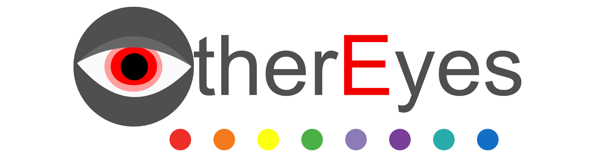

Intensity:
Normal
- Deuteranopie
- Protanopia
- Tritanopia
- Graufilter
- Neon
- Negativ
- Deuteranopie
- Protanopia
- Tritanopia
-
Wir sind eine Gruppe von Schülern, die es sich zur Aufgabe gemacht haben, das
Surferlebnis im Internet und das Erstellen von Webseiten zu verbessern. Unser Team
besteht aus talentierten Entwicklern und Designern, die alle daran arbeiten, diese
innovative Browser-Erweiterung zu entwickeln.
Unser Ziel ist es ihnen neue Möglichkeiten zu bieten. Wir sind stolz darauf, diese benutzerfreundliche Erweiterungen zu entwickeln, die unseren Nutzern das Leben erleichtern.
Wir hoffen, dass unsere Erweiterung Ihnen dabei hilft ihr Browererlebnis zu verbessern. Wir freuen uns darauf, von Ihnen zu hören und zu erfahren, wie wir Ihnen noch besser helfen können. .
About Us
-
Das Addon wurde entwickelt für Menschen mit einer Sehschwäche, die eine Beihilfe
brauchen, während sie durch das Internet surfen und für Entwickler die während der
Produktion die Perspektive eines Menschen mit einer Sehschwäche besser verstehen
wollen. Das Addon besteht aus einer Vielzahl von Farbpaletten, die zum einen die
Sehschwäche ausgleichen und zum anderen die Sehschwäche simulieren.
Informationen

-
Download link